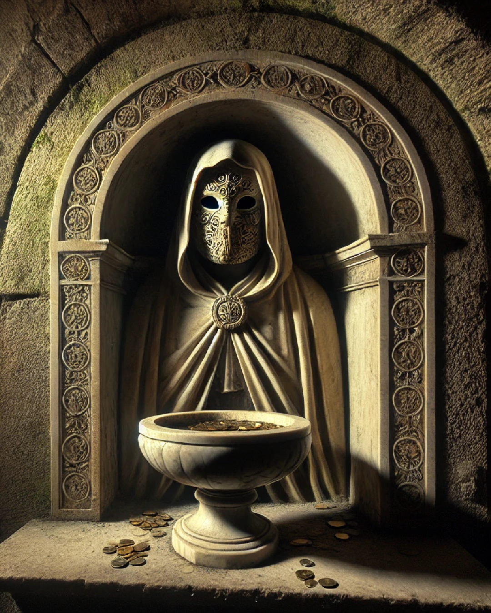

Within these catacombs, secrets of Mazd Gildan are said to stir the depths of mortal desire.

Step softly among the shadows; Mazd Gildan’s gaze may yet reward—or condemn—you...
Blessing Rules & Invocation
Blessing Duration:
Immediate Use: Blessings take effect immediately and last for 24 hours.
Stored Invocation: You can store the blessing for later use (one blessing stored at a time). It must be invoked within 7 days or it fades.
Invoking a Stored Blessing:
Requires a brief prayer or focus (one action or short pause). Roleplay the invocation by calling upon the granting god. E.g., “Mazd Gildan, grant me what glimmers in the dark!”
Remember: One must choose their blessings wisely, as divine favour is powerful but fleeting.